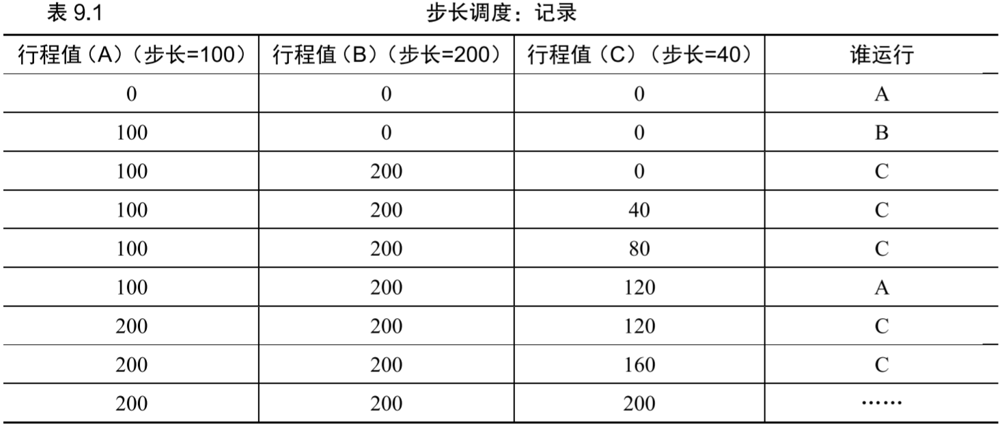

OSTEP第9章 调度：比例份额
文章目录
比例份额(proportional-share)又称公平份额(fair-share)，基于简单的想法：调度的最终目标是确保每个工作获得一定比例的cpu时间，而不是优化周转时间和响应时间- 比例份额调度的现代例子是
彩票调度(lottery scheduling)：每隔一段时间举行彩票抽奖，以确定接下来运行哪个进程。越是应该频繁运行的进程，越是应该拥有更多的彩票（更大的中奖概率）
基本概念：彩票数表示份额
- 彩票数(ticket)代表了进程占有某资源的份额。进程拥有的彩票数占总彩票数的百分比即是它占有资源的份额
- 通过定时（例如每个时间片）抽取中奖彩票，彩票调度从概率上使各个任务获得一定比例的资源
- 例子：假如有两个任务A/B，分别有75/25张彩票，则抽取中奖彩票时有0.75/0.25的概率运行A/B
- 彩票调度利用了随机性，既可靠又简单，相对传统的决策方式，有点：
- 随机方法经常可避免奇怪的边界情况，例如LRU替换策略在有重复序列负载时表现很差，引入随机方法后没有最差情况
- 随机方法很轻量，几乎不需要记录状态（只需记录每个进程拥有的彩票号码）
- 只要能快速生成随机数，随机方法就很快。但生成随机数越快，经常就越倾向于伪随机
彩票机制
- 彩票调度中提供的机制：
彩票货币（ticket currency）：允许拥有一批彩票的用户以他自己的货币将彩票分给自己的不同进程。之后系统再将这些进程得到的彩票数换算为全局彩票。（例如，用户A/B分别有50/50张彩票，用户A可将自己的50张彩票兑换为自己的货币100张，再给它的进程A1/A2分别分配30/70张。这样在全局来看，A1/A2的彩票数分别为15/35张）彩票转让（ticket transfer）：一个进程可临时将自己的彩票交给另一个进程。这种机制在客户端/服务端交互的场景中很有用：客户端可请求服务端按照自己的需求执行工作，为加速服务端的工作，客户端可将自己的彩票转让给服务端，从而尽可能加速服务端的执行，服务端执行结束后将这些彩票归还给客户端彩票通胀（ticket inflation）：一个进程可临时提升/降低自己拥有的彩票数量。在进程之间相互信任的环境下，若一个进程知道自己需要更多的cpu时间，就可增加自己的彩票（而不需要通知其它进程）
实现
- 彩票调度的实现很简单，只需要：
- 一个随机数生成器来选择中奖彩票
- 一个记录系统中所有进程的数据结构（列表）
- 记录彩票总数
- 假设通过
链表存储每个进程含有的彩票数，A/B/C含有的彩票数分别为100/50/250，调度程序如下：
|
|
- 上面程序用指针current遍历链表，每次得到一个进程的彩票数，即生成它拥有彩票的编号范围，判断中奖彩票是否在该范围即可。
- 在上面程序的遍历过程中，建议将链表按照彩票数递减排序，因为彩票数越多的进程越容易被选中，放在前面可减少每次遍历经过的节点数。这在长尾时（大多数彩票被少量进程掌握）很有用
一个例子
- 若两个互相竞争的工作拥有相同数量的彩票，用两工作完成的时刻相除得到不公平指标（越接近1越公平），则运行的时间片越多，调度越公平（根据大数定律）。即，长任务使用彩票调度是公平的
如何分配彩票
- 没有最佳答案，这取决于用户需求
为什么不是确定的
- 虽然随机方法让调度简单且大致正确，但工作时间很短时无法做到公平
步长调度- 每个工作都有自己的
步长(stride)，它与彩票数成反比 - 每个进程维护一个
行程(pass)，它是一个计数器，每次进程运行一个时间片后都将步长加到行程上 - 调度程序在每次需要选择进程时，选择目前拥有最小行程的进程
- 彩票调度只能在长时间运行下在概率上实现比例，而步长调度可在每个调度周期后做到完全正确的比例
- 优先队列实现步长调度的伪代码如下：
- 每个工作都有自己的
|
|
- 例子：A/B/C的彩票数分别是100/50/250，用10000除它们，得到步长为100/200/40，初始行程都是0，则执行过程如表9.1（从上到下）： 
- 上表中A/B/C运行的次数为2/1/5，刚好是票数的比例。步长调度可在每个调度周期后做到完全正确的比例
- 彩票调度相对于步长调度的优势是：不需要对每个进程记录全局状态。例如，新加入的进程无法被步长调度处理（步长不能直接设为0，否则新任务一直占用cpu），而彩票调度只需更新总票数和新进程的票数即可
小结
- 比例份额中的彩票调度和步长调度都没有被广泛使用，原因：
- 这两种方式都不能很好的处理IO
- 票数分配问题没有确定的解决方式
- 比例份额调度只有在很特殊的情况下才好用，例如虚拟数据中心给操作系统和虚拟机分配固定比例的cpu资源，使用比例分配简单高效